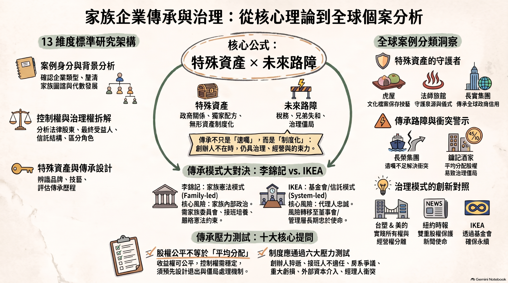
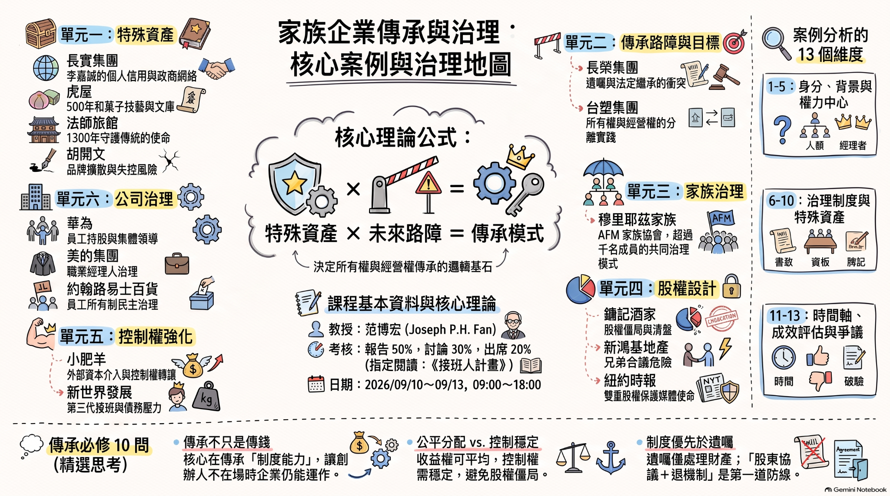

家族企業傳承與治理圖解
PNG
改成圖形化閱讀：先用視覺化框架抓住課程主軸，再用案例地圖快速找個案；完整分析保留在互動展開層，不把所有文字一次塞滿。
解決「字太多」的方式，不是刪內容，而是把內容分成三層：課程主軸、案例縮圖、完整分析。
先辨識創辦人與家族究竟為企業帶來哪些不可取代的無形資產。
看家族人口、資本需求、產業變化與制度衝擊，判斷接班難度。
決定所有權與經營權是家族內傳承、家族控股、保留經營，或退出經營。
再回頭設計家族治理、股權設計、董事會機制與經理人激勵。
所有權與經營權皆可延續於家族，重點是培養接班能力與維持共同價值。
家族保留所有權與治理監督，但經營管理交給專業團隊。
外部挑戰大，需要資本與制度支持，但家族仍保有對企業的重要價值貢獻。
當家族無法持續增值且路障過多，較佳選擇可能是轉換為財富管理。
把原本長文字課綱，轉成由前到後的學習旅程。
每個案例都掛在某個治理主題下，先記住主題，再回頭找個案。
每一個案例都保留完整分析。首頁只露出「定位、特殊資產、風險、討論題」，避免視覺壓力過大。
四份你提供的視覺資料直接嵌入網站。圖片可直接閱讀；PDF 可在頁面內翻頁，也保留「開啟原檔」入口。


GitHub Pages 使用同一資料夾內的相對路徑載入，沒有外部圖片來源，也不需要額外網站權限。
報告不是寫公司故事，而是做一份可被檢驗的傳承治理方案。
課後 2 週內繳交，含圖表與附錄不超過 15 頁。以 20 年以上歷史家族企業為佳。
另有小組討論報告 30%｜出席與表現 20%
交代創始家族、企業、產業與發展階段。
說明創辦人與家族為何對企業成就不可取代。
分析家族、產業、資本、市場與制度路障。
客觀選擇所有權與經營權該如何安排。
家族治理、股權設計、公司治理要能互相支撐。
說明制度設計原因、預期效果與可能問題。
可直接拿來當課堂發言、期末選題與小組討論切入角度。